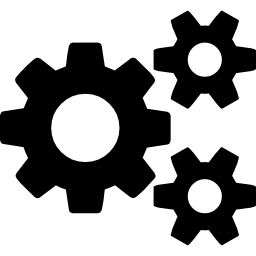

Capability upgrades without dll hell.
Create code. Inject into live systems. Crush downtime.
Introducing Cogs
Cogs represents a capability upgrade system. This plugin system allows a developer to upgrade or extend a system's capabilities without introducing downtime.
Designed for use with the upcoming Marmot Workflow Execution Engine, Cogs provide a needed capability for services that need modification without scheduled downtime.
How Does it Work
Cogs are built on Google's GRPC framework. The Cog client library allows mounting and un-mounting of Cog plugins that run a specialized GRPC service. This service can only be communicated with by the Cog client that created it.
The Cogs client library can detect when the source binary of a Cog is changed and upgrade the running Cog to the new version at any time. Existing connection will bleed off while the new Cog begins processing new requests.
Authors and Contributors
John Doak (@johnsiilver)